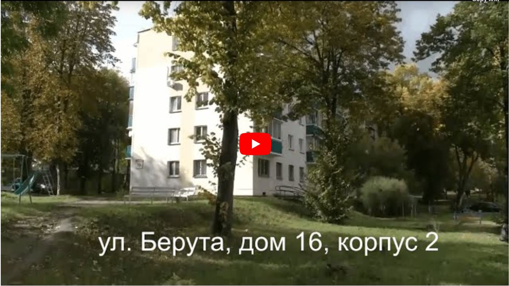
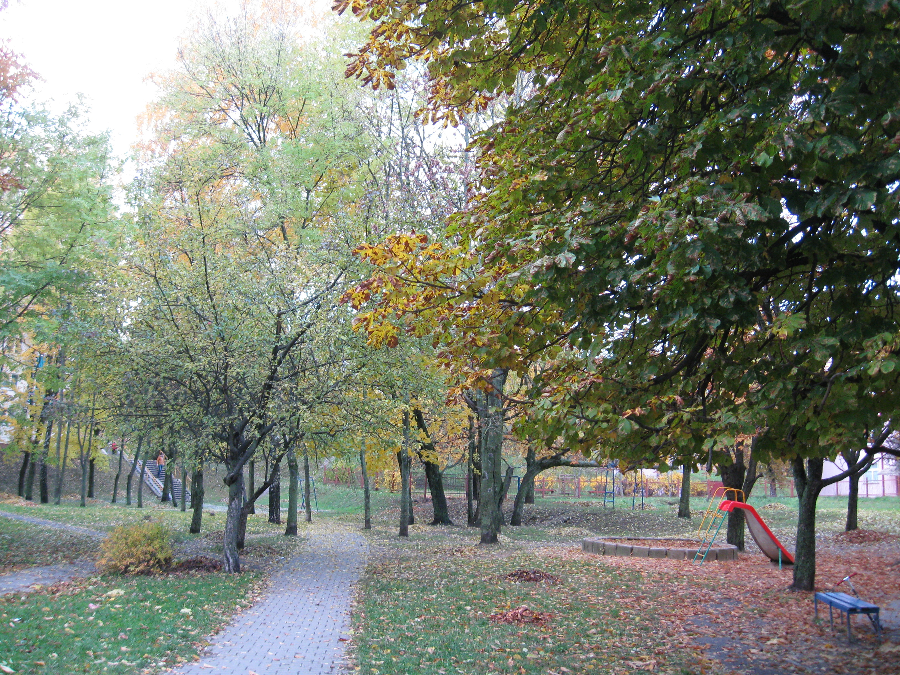

В 2009 году в доме проведен полноценный капитальный ремонт (теплоизоляция, замена коммуникаций).
Напомним, что с 2015 г. теплоизоляция не входит в капитальный ремонт, и жильцы должны оплачивать ее отдельно,
что происходит крайне редко и дома в основном без теплоизолации.
Tеплоизоляция делает квартиру не только теплой зимой, но и предохраняет летом от излишней жары.
Чистый и свежий подъезд.
В доме есть подвал, в котором находится наш блок 2x2x3 метра.
Есть возможность обустроить дополнительное место для хранения.
Зеленый чистый двор. Возле дома есть большая детская площадка.

Квартал вокруг дома состоит из капитально отремонтированных домов, выгодно отличающихся от посеревших панелек.
Видеоцитата о корпусах дома №16 по ул. Берута с канала СНиП - Кацубо
Вы сможете оценить преимущества сформировавшегося квартала малоэтажной застройки по сравнению с построенными и еще строящимися переуплотненными нагромождениями высоток.